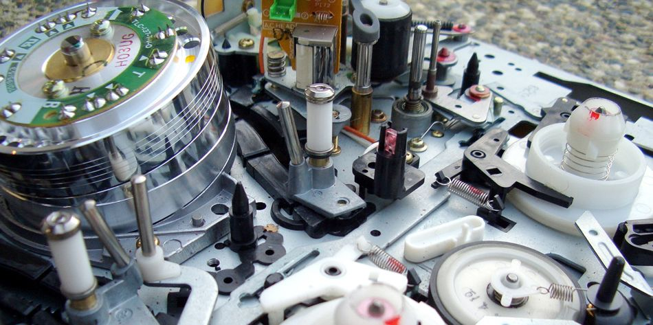

Calculate emf, current, and magnetic fields using Faraday’s Law.
Explain the physical results of Lenz’s Law
Faraday’s and Lenz’s Law
Faraday’s experiments showed that the emf induced by a change in magnetic flux depends on only a few factors. First, emf is directly proportional to the change in flux . Second, emf is greatest when the change in time is smallest—that is, emf is inversely proportional to . Finally, if a coil has turns, an emf will be produced that is times greater than for a single coil, so that emf is directly proportional to . The equation for the emf induced by a change in magnetic flux is
This relationship is known as Faraday’s law of induction. The units for emf are volts, as is usual.
The minus sign in Faraday’s law of induction is very important. The minus means that the emf creates a current I and magnetic field B that oppose the change in flux —this is known as Lenz’s law. The direction (given by the minus sign) of the emf is so important that it is called Lenz’s law after the Russian Heinrich Lenz (1804–1865), who, like Faraday and Henry,independently investigated aspects of induction. Faraday was aware of the direction, but Lenz stated it so clearly that he is credited for its discovery. (See the figure.)
(a) When this bar magnet is thrust into the coil, the strength of the magnetic field increases in the coil. The current induced in the coil creates another field, in the opposite direction of the bar magnet’s to oppose the increase. This is one aspect of Lenz’s law—induction opposes any change in flux. (b) and (c) are two other situations. Verify for yourself that the direction of the induced shown indeed opposes the change in flux and that the current direction shown is consistent with RHR-2.
Problem-Solving Strategy for Lenz’s Law
To use Lenz’s law to determine the directions of the induced magnetic fields, currents, and emfs:
Make a sketch of the situation for use in visualizing and recording directions.
Determine the direction of the magnetic field B.
Determine whether the flux is increasing or decreasing.
Now determine the direction of the induced magnetic field B. It opposes the change in flux by adding or subtracting from the original field.
Use RHR-2 to determine the direction of the induced current I that is responsible for the induced magnetic field B.
The direction (or polarity) of the induced emf will now drive a current in this direction and can be represented as current emerging from the positive terminal of the emf and returning to its negative terminal.
For practice, apply these steps to the situations shown in the figure and to others that are part of the following text material.
Applications of Electromagnetic Induction
There are many applications of Faraday’s Law of induction, as we will explore in this chapter and others. At this juncture, let us mention several that have to do with data storage and magnetic fields. A very important application has to do with audio and video recording tapes. A plastic tape, coated with iron oxide, moves past a recording head. This recording head is basically a round iron ring about which is wrapped a coil of wire—an electromagnet (the figure). A signal in the form of a varying input current from a microphone or camera goes to the recording head. These signals (which are a function of the signal amplitude and frequency) produce varying magnetic fields at the recording head. As the tape moves past the recording head, the magnetic field orientations of the iron oxide molecules on the tape are changed thus recording the signal. In the playback mode, the magnetized tape is run past another head, similar in structure to the recording head. The different magnetic field orientations of the iron oxide molecules on the tape induces an emf in the coil of wire in the playback head. This signal then is sent to a loudspeaker or video player.

Recording and playback heads used with audio and video magnetic tapes. (credit: Steve Jurvetson)
Similar principles apply to computer hard drives, except at a much faster rate. Here recordings are on a coated, spinning disk. Read heads historically were made to work on the principle of induction. However, the input information is carried in digital rather than analog form – a series of 0’s or 1’s are written upon the spinning hard drive. Today, most hard drive readout devices do not work on the principle of induction, but use a technique known as giant magnetoresistance. (The discovery that weak changes in a magnetic field in a thin film of iron and chromium could bring about much larger changes in electrical resistance was one of the first large successes of nanotechnology.) Another application of induction is found on the magnetic stripe on the back of your personal credit card as used at the grocery store or the ATM machine. This works on the same principle as the audio or video tape mentioned in the last paragraph in which a head reads personal information from your card.
Another application of electromagnetic induction is when electrical signals need to be transmitted across a barrier. Consider the cochlear implant shown below. Sound is picked up by a microphone on the outside of the skull and is used to set up a varying magnetic field. A current is induced in a receiver secured in the bone beneath the skin and transmitted to electrodes in the inner ear. Electromagnetic induction can be used in other instances where electric signals need to be conveyed across various media.
Electromagnetic induction used in transmitting electric currents across mediums. The device on the baby’s head induces an electrical current in a receiver secured in the bone beneath the skin. (credit: Bjorn Knetsch)
Another contemporary area of research in which electromagnetic induction is being successfully implemented (and with substantial potential) is transcranial magnetic simulation. A host of disorders, including depression and hallucinations can be traced to irregular localized electrical activity in the brain. In transcranial magnetic stimulation, a rapidly varying and very localized magnetic field is placed close to certain sites identified in the brain. Weak electric currents are induced in the identified sites and can result in recovery of electrical functioning in the brain tissue.
Sleep apnea (“the cessation of breath”) affects both adults and infants (especially premature babies and it may be a cause of sudden infant deaths [SID]). In such individuals, breath can stop repeatedly during their sleep. A cessation of more than 20 seconds can be very dangerous. Stroke, heart failure, and tiredness are just some of the possible consequences for a person having sleep apnea. The concern in infants is the stopping of breath for these longer times. One type of monitor to alert parents when a child is not breathing uses electromagnetic induction. A wire wrapped around the infant’s chest has an alternating current running through it. The expansion and contraction of the infant’s chest as the infant breathes changes the area through the coil. A pickup coil located nearby has an alternating current induced in it due to the changing magnetic field of the initial wire. If the child stops breathing, there will be a change in the induced current, and so a parent can be alerted.
Making Connections: Conservation of Energy
Lenz’s law is a manifestation of the conservation of energy. The induced emf produces a current that opposes the change in flux, because a change in flux means a change in energy. Energy can enter or leave, but not instantaneously. Lenz’s law is a consequence. As the change begins, the law says induction opposes and, thus, slows the change. In fact, if the induced emf were in the same direction as the change in flux, there would be a positive feedback that would give us free energy from no apparent source—conservation of energy would be violated.
Calculating Emf: How Great Is the Induced Emf?
Calculate the magnitude of the induced emf when the magnet in the figure(a) is thrust into the coil, given the following information: the single loop coil has a radius of 6.00 cm and the average value of (this is given, since the bar magnet’s field is complex) increases from 0.0500 T to 0.250 T in 0.100 s.
Strategy
To find the magnitude of emf, we use Faraday’s law of induction as stated by , but without the minus sign that indicates direction:
Solution
We are given that and , but we must determine the change in flux before we can find emf. Since the area of the loop is fixed, we see that
Now , since it was given that changes from 0.0500 to 0.250 T. The area of the loop is . Thus,
Entering the determined values into the expression for emf gives
Discussion
While this is an easily measured voltage, it is certainly not large enough for most practical applications. More loops in the coil, a stronger magnet, and faster movement make induction the practical source of voltages that it is.
Faraday's Electromagnetic Lab
Play with a bar magnet and coils to learn about Faraday's law. Move a bar magnet near one or two coils to make a light bulb glow. View the magnetic field lines. A meter shows the direction and magnitude of the current. View the magnetic field lines or use a meter to show the direction and magnitude of the current. You can also play with electromagnets, generators and transformers!
Faraday’s law of induction states that the emfinduced by a change in magnetic flux is
when flux changes by in a time .
If emf is induced in a coil, is its number of turns.
The minus sign means that the emf creates a current and magnetic field that oppose the change in flux —this opposition is known as Lenz’s law.
Conceptual Questions
A person who works with large magnets sometimes places her head inside a strong field. She reports feeling dizzy as she quickly turns her head. How might this be associated with induction?
A particle accelerator sends high-velocity charged particles down an evacuated pipe. Could a coil of wire wrapped around the pipe detect the passage of individual particles via an induced emf? If so, sketch a graph of the voltage output of the coil as a single particle passes through it. If not, determine what orientation of the coil would allow detection of the particle and explain why this orientation is needed.
Problems & Exercises
Referring to the figure(a), what is the direction of the current induced in coil 2: (a) If the current in coil 1 increases? (b) If the current in coil 1 decreases? (c) If the current in coil 1 is constant? Explicitly show how you follow the steps in the Problem-Solving Strategy for Lenz's Law.
(a) The coils lie in the same plane. (b) The wire is in the plane of the coil
(a) CCW
(b) CW
(c) No current induced
Referring to the figure(b), what is the direction of the current induced in the coil: (a) If the current in the wire increases? (b) If the current in the wire decreases? (c) If the current in the wire suddenly changes direction? Explicitly show how you follow the steps in the Problem-Solving Strategy for Lenz’s Law.
Referring to the figure, what are the directions of the currents in coils 1, 2, and 3 (assume that the coils are lying in the plane of the circuit): (a) When the switch is first closed? (b) When the switch has been closed for a long time? (c) Just after the switch is opened?
(a) 1 CCW, 2 CCW, 3 CW
(b) 1, 2, and 3 no current induced
(c) 1 CW, 2 CW, 3 CCW
Repeat the previous problem with the battery reversed.
Verify that the units of / are volts. That is, show that .
Suppose a 50-turn coil lies in the plane of the page in a uniform magnetic field that is directed into the page. The coil originally has an area of
.
It is stretched to have no area in 0.100 s. What is the direction and magnitude of the induced emf if the uniform magnetic field has a strength of 1.50 T?
(a) An MRI technician moves his hand from a region of very low magnetic field strength into an MRI scanner’s 2.00 T field with his fingers pointing in the direction of the field. Find the average emf induced in his wedding ring, given its diameter is 2.20 cm and assuming it takes 0.250 s to move it into the field. (b) Discuss whether this current would significantly change the temperature of the ring.
(a) 3.04 mV
(b) As a lower limit on the ring, estimate R = 1.00 mΩ. The heat transferred will be 2.31 mJ. This is not a significant amount of heat.
Integrated Concepts
Referring to the situation in the previous problem: (a) What current is induced in the ring if its resistance is 0.0100 ? (b) What average power is dissipated? (c) What magnetic field is induced at the center of the ring? (d) What is the direction of the induced magnetic field relative to the MRI’s field?
An emf is induced by rotating a 1000-turn, 20.0 cm diameter coil in the Earth’s magnetic field. What average emf is induced, given the plane of the coil is originally perpendicular to the Earth’s field and is rotated to be parallel to the field in 10.0 ms?
0.157 V
A 0.250 m radius, 500-turn coil is rotated one-fourth of a revolution in 4.17 ms, originally having its plane perpendicular to a uniform magnetic field. (This is 60 rev/s.) Find the magnetic field strength needed to induce an average emf of 10,000 V.
Integrated Concepts
Approximately how does the emf induced in the loop in the figure(b) depend on the distance of the center of the loop from the wire?
proportional to
Integrated Concepts
(a) A lightning bolt produces a rapidly varying magnetic field. If the bolt strikes the earth vertically and acts like a current in a long straight wire, it will induce a voltage in a loop aligned like that in the figure(b). What voltage is induced in a 1.00 m diameter loop 50.0 m from a lightning strike, if the current falls to zero in
?
(b) Discuss circumstances under which such a voltage would produce noticeable consequences.
Key terms
Faraday’s law of induction the means of calculating the emf in a coil due to changing magnetic flux, given by
Lenz’s law the minus sign in Faraday’s law, signifying that the emf induced in a coil opposes the change in magnetic flux
![Part a of the figure shows a bar magnet held horizontal and moved into a coil held in the same plane. The magnet is moved in such a way that the north pole of the magnet is shown to face the coil. The magnetic lines of force are shown to emerge out from the North Pole. The magnetic field associated with the bar magnet is given as B mag. The strength of the magnetic field increases in the coil. The current induced in the coil I creates another field B coil, in the opposite direction of the bar magnet to oppose the increase. So B mag and B coil are in opposite directions. In part b of the diagram, the magnet is moved away from the coil. The magnet is moved in such a way that the north pole of the magnet is shown to face the coil. The magnetic lines of force are shown to emerge out from the North Pole. The magnetic field associated with the bar magnet is given as B mag. The current induced in the coil I creates another field B coil, in the same direction as the field of the bar magnet. So B mag and B coil are in same directions. Part c of the figure shows a bar magnet held horizontal and moved into a coil held in the same plane. The magnet is moved in such a way that the south pole of the magnet is shown to face the coil. The magnetic lines of force are shown to merge into the South Pole. The magnetic field associated with the bar magnet is given as B mag. The current induced in the coil I, creates another field B coil, in the opposite direction of field of the bar magnet. So B mag and B coil are in opposite directions.](Figure_24_02_01_new.jpg)